Gameplay System Module
What is the goal?
I wanted to create a tool that could be used to create many kinds of gameplay, utilising some common types that each would represent systems that games feature.
This would require a heavily modular set of tools and classes that could then be derived and expanded upon for different games and teams.
This module was developed as part of my research into modular gameplay systems for my Bachelors Thesis.
What is it?
Throughout development I ended up with four base tools, GameplayAbilities, GameplayEffects, GameplayEvents & Attributes, that all can be used to author gameplay elements.
These are derived from superclasses that define their base functionality and purpose, and allow us to encapsulate gameplay elements into reusable pieces for easier development.
I took inspiration from Unreal's GameplayAbilitySystem when designing the module.
This module was used for creating the hack-and-slash combat featured in Access Acquired.
I want to hear more!
GameplayAbilities
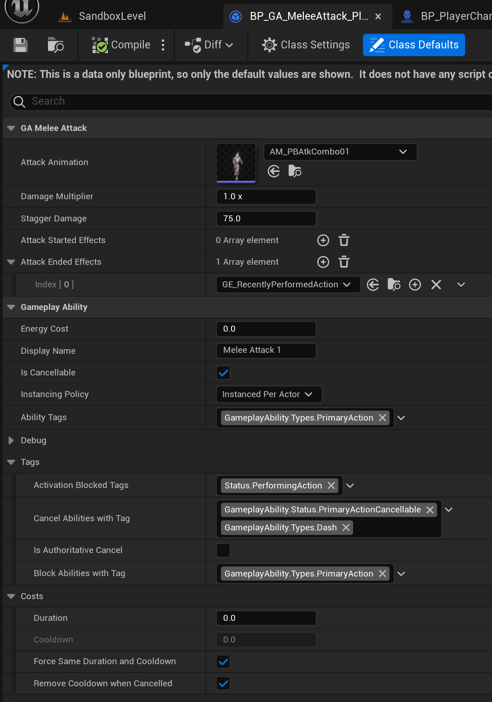
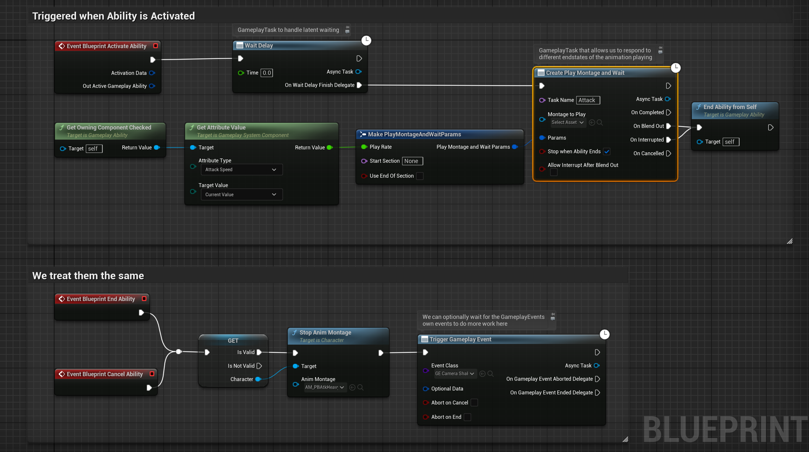
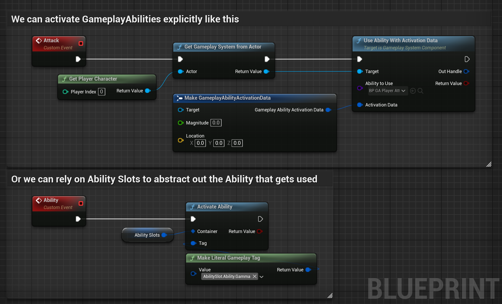
These represent the actions that can be performed by an character. Supports complex activation requirements, cancelling of in-action abilities, cooldowns and more, giving full control over how actions interact with each-other and what they do.
GameplayEvents
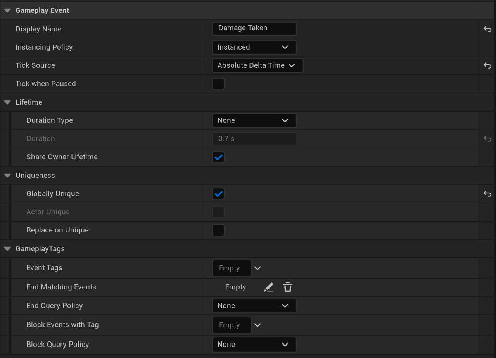
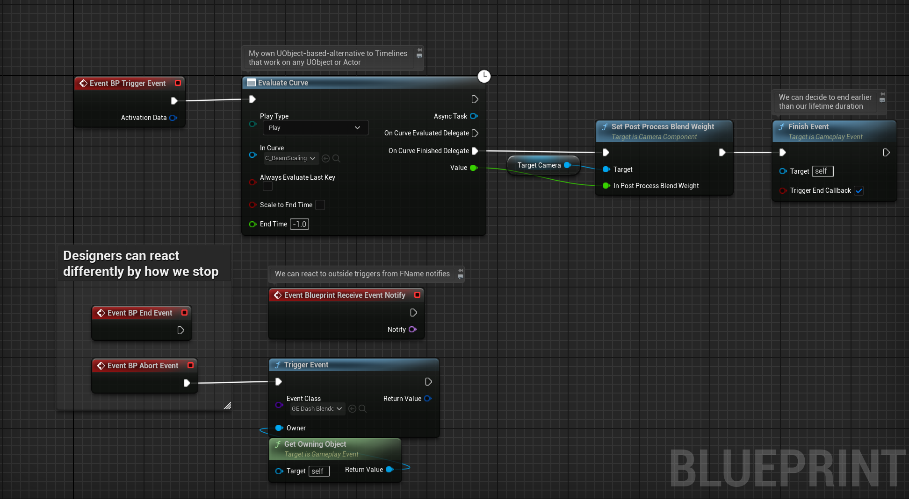
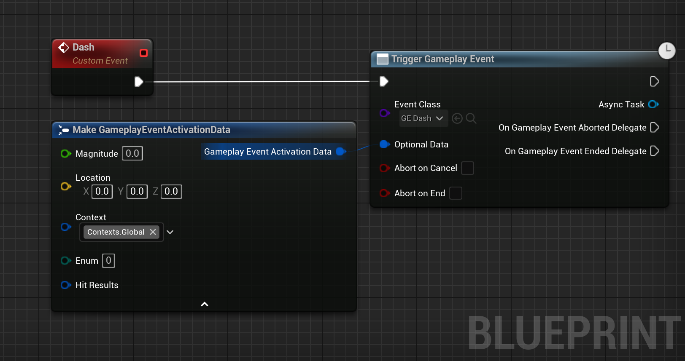
These encapsulate any VFX, SFX and other visual or game feel work into reusable events. Features global or per-actor uniqueness, DeltaTime syncing options, blocking and ending rules enforced through GameplayTags, can share lifetime with their activator and more.
GameplayEffects
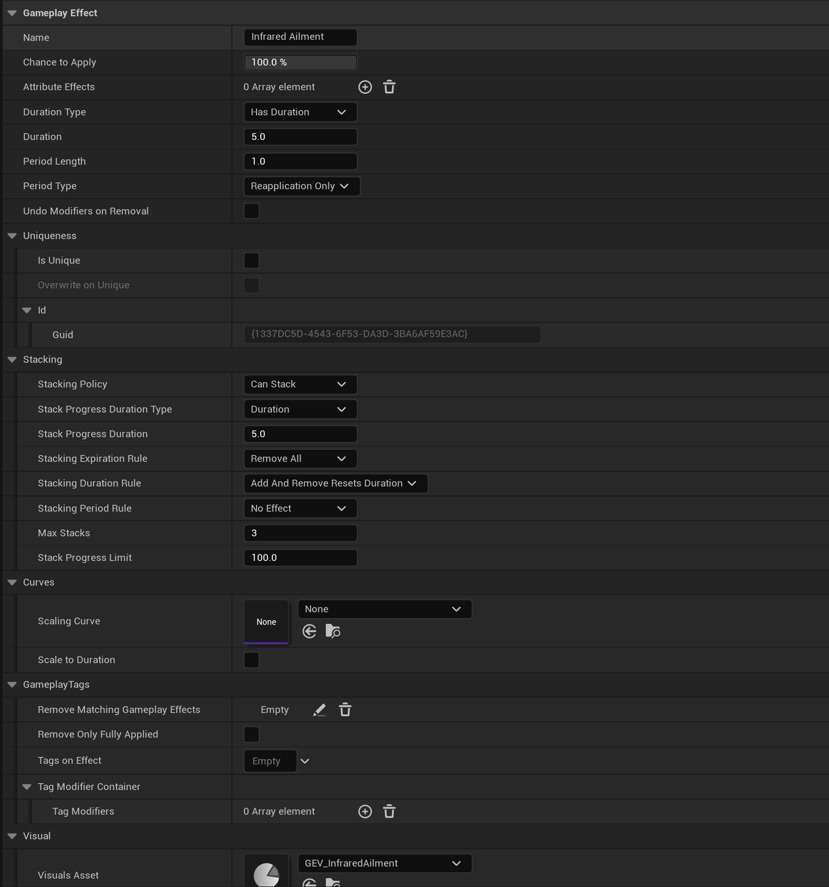
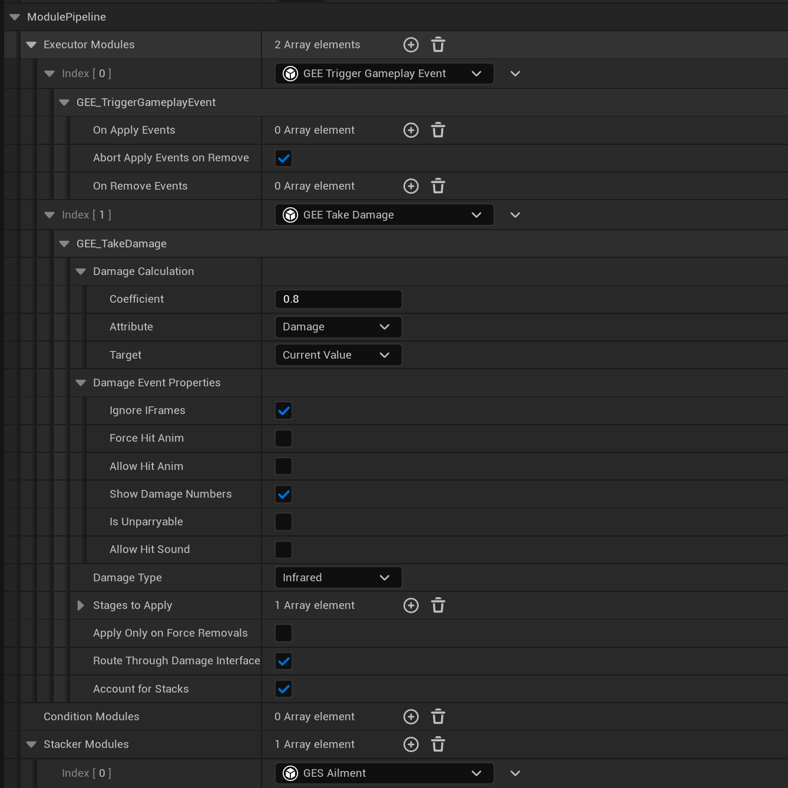
Temporary modifiers that can be applied to a GameplaySystem. They can modify attributes, GameplayTags, be represented in modifier bars, trigger other modifiers, abilities, events and more. This allows them to any number of modifiers a game might need, and as such also have alot of parameters to tweak the individual behaviours.
Modules
GameplayEffects can also utilise Modules which allows for further customization.
Modules are UObjects, and can be derived to create any effect and behaviour that the existing properties can't make.
They are instanced per GameplayEffect, and can as such have properties themselves that are adjustable per GameplayEffect.
There are three types of modules, that each affect a part of the GameplayEffects behaviour:
Executors - Changes the application, reapplication and removal procedure
Conditions - Changes the application and reapplication conditions
Stackers - Changes the stacking behaviour of GameplayEffects with stacking enabled
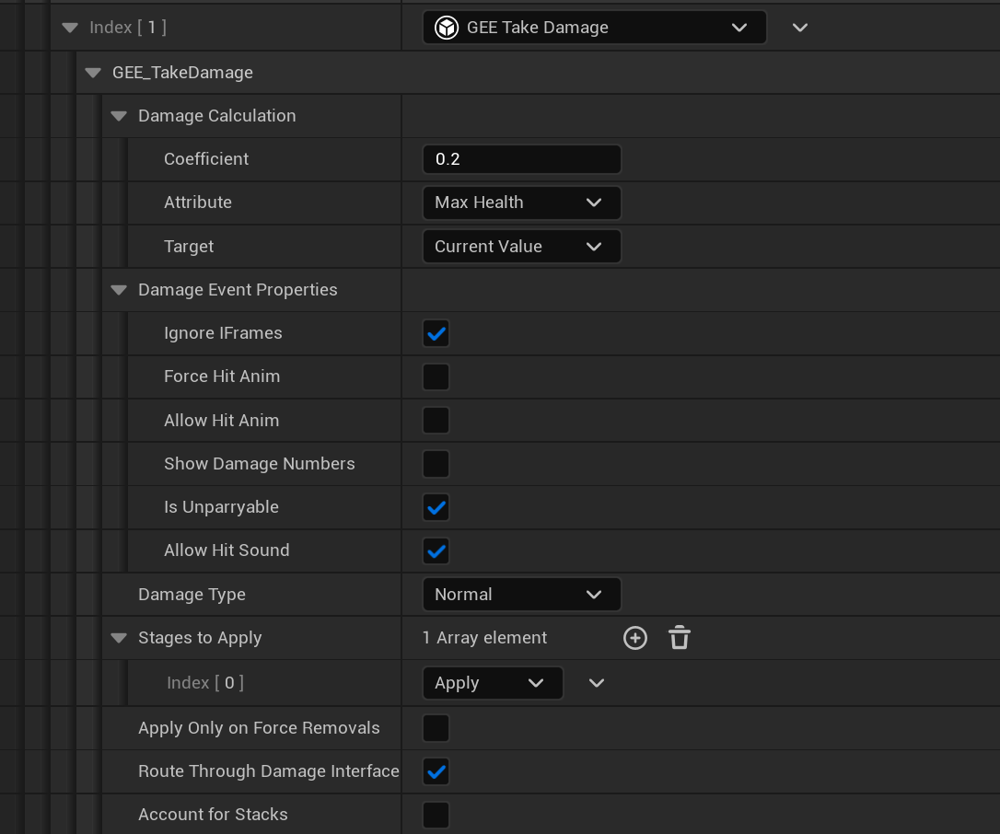
Example of a TakeDamage Executor module used to deal damage.
Changing the health attribute of Actor directly is ofcourse possible, but this
will sidestep the entire damage system, which is usually not desired. By using a Module, we let the GameplayEffect generate
a damage event that can be resolved normally.
This is especially important for the player, since they typically have unique feedback associated with taking damage
(screen effects, sound effects, haptic feedback) which is vital to preserve when taking damage.
Attributes
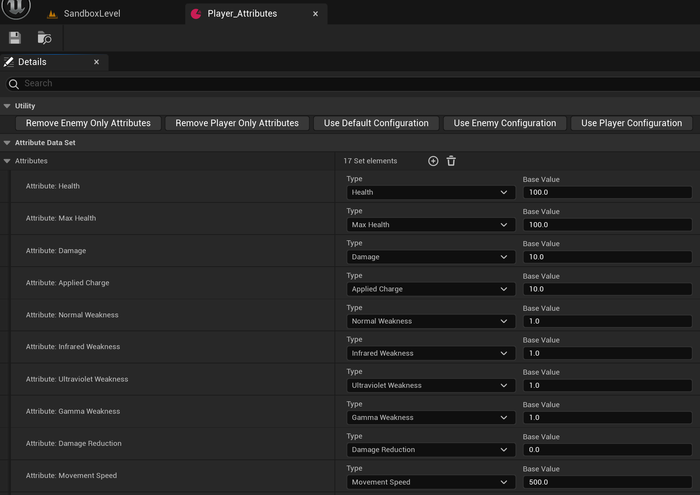
These can be anything from health to damage multipliers - whatever is needed for your game. Modifiers can be aggregated and stacked which allows for complicated RPG-like stat chains of mixed types, such as additive, multiplicative or overriding effects. You can read more about the custom Slate UI under the UI section.
Levels and experience
A DataSet can be used to assign level-breakpoints, which will trigger when enough experience is gained. This can increase attributes and trigger fitting visual effects.
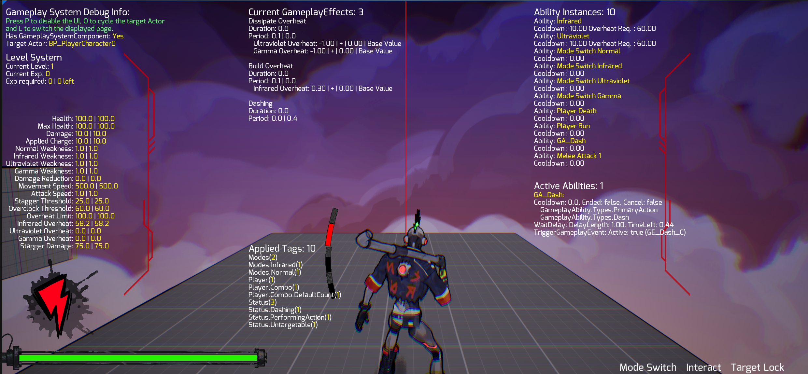
Integrated Debug UI
The framework features a custom Debug widget that automatically displays key properties of a GameplaySystem.
It has input bindings that allow designers to quickly toggle it on and off, switch the displayed page and swap the displayed component.
Takeaways
-
Creating a flexible system and breaking apart gameplay concepts into separate components and modules requires careful planning.
Separation of concern, encapsulation, and composition is very important for this type of work. - I've found its important to collaborate closely with the people the tool is made for, to more quickly identify shortcomings or areas where more attention is needed. For example, it was quickly found that a way to safely delay execution for GameplayEvents was needed, which was noticed when a Tech Artist sat down and tried to use the tools I created.
- While alot of setup is needed, the payoff in terms of quick prototyping this sort of module allows for is can not be understated and something I will use in the future.
Target Locking
What is it?
An ActorComponent that allows the camera to track enemies, locking onto them and keeping the screen centered when requested by the player. It creates MotionWarping targets to help the player target enemies even without input, or correct their input to stay on target.
What does it do?
Switch Targets
Players can switch targets by inputting a direction on the camera controls. While testing, I found that it was more intuitive to pick targets based on their location in screen space, as opposed to distance between targets. An input to the right would therefore switch from the current target to the nearest enemy on it's right, as they appear on screen.
Camera Tracking
A CameraModifier is applied to the owning Actors Camera component, which is responsible for the target tracking and ensures only one tracking modifier is applied at once.
World-Icon
When a target is locked, a WidgetComponent is enabled and lerped towards targets location. It queries the targets TargetLockingComponent to allow it to decide the location of the icon to ensure that different-sized targets all have the icon centered on their body.
Aim assist
During playtesting, we found that it could be difficult to keep the players attacks on enemies during the chaotic combat. To help this, actions that involve movement or require targeting can request MotionWarping points to be placed. The played animations can then use these points to rotate towards the targets direction.
Any Actor with a TargetLockableComponent is tracked within a certain distance.
When an action requests a target, one the first successful option is picked:
Option 1. If there is active player movement input beyond a low threshold use the input to create a MotionWarping point.
Option 2. If there is an active Target Lock, use its target as the MotionWarping point.
Option 3. Find the closest tracked target in the forward direction of the owning Actor. If one exists use it as the MotionWarping point.
Option 4. Don't create a MotionWarping point.
The active-input-override was added during the implementation, since I noticed very quickly that whenever the aim assist tried to track a target
my own input would be ignored which just felt frustrating, rather than helpful.
Finally, while I was at it
I added an extra feature where whenever a target is found very close to the direction the player inputs,
it will place a MotionWarping point on it to it to ensure the attack is facing the target.
Takeaways
- The target locking, and especially the soft aim assist helped improve game-feel and player agency, without being too noticable to players.
- The screen-space-based selection for targets makes the controls much more intuitive, and is something I recommend more games do.
- Not many players used the Target Locking, so I would focus my time on the aim assist and other features if done again.
Networked Tank Battles
What is it?
A fully networked game, ran over the local network with my own network protocol and game engine. It handles automatic LAN discovery, connecting multiple separate clients, timeouts for unresponsive clients, disconnects and reconnects. Packets are sent from the Server 10 times per second, with Client sending input 20 times per second, but can be customised for different game types.
I want to hear more!
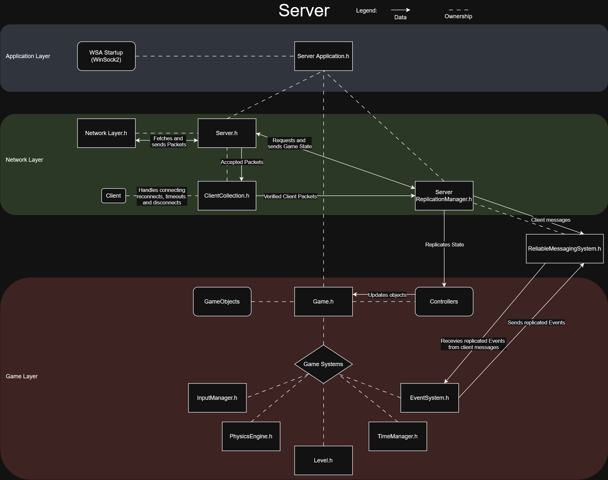
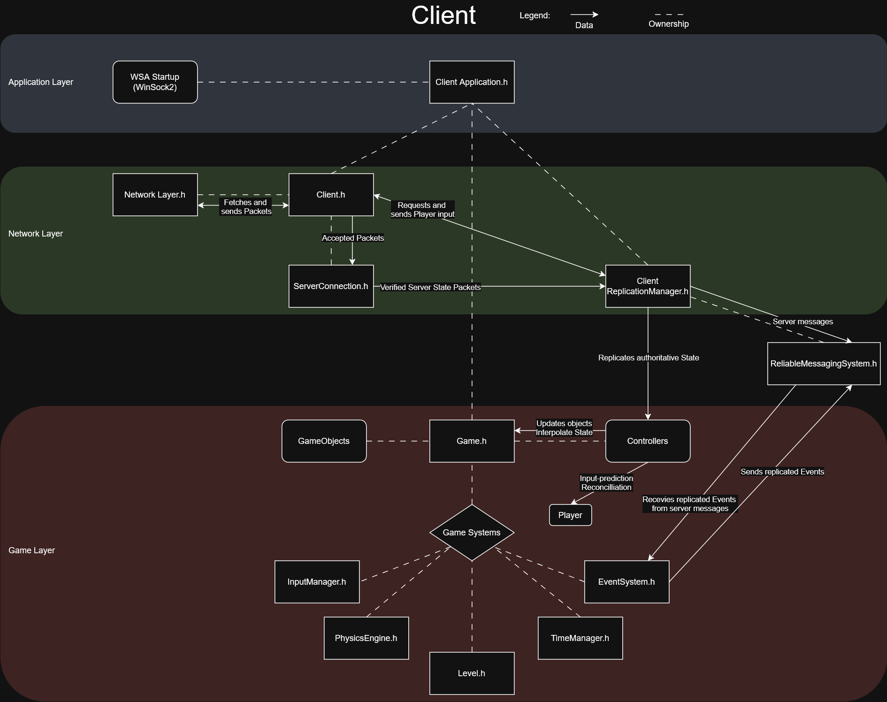
Object-Oriented Design
The engine supports polymorphic handling of abstract GameObjects, which is the core Super class that all Game entities derive from. Objects can then implement multiple functions to expand their functionality, such as signing up to the Controllers are assigned to objects on creation, and handle the objects replication & serialization, interpolation and - in the case of PlayerControllers - input.
Physics Engine
Colliders are used to describe physics shapes, which are represented as a collection of convex 2D points. Participating entities will receive callbacks when colliding with other entities and receive any generated collision data. I use Separating Axis Theorem to detect collisions between game-ticks. Minimum Translation Vector is used to accurately separate objects with respect to their position and rotation.
Ticking and Timers
TimeManager which Ticks objects and handles asynchronous actions and timers.
Network Protocol
It handles automatic LAN discovery, connecting multiple separate clients, timeouts for unresponsive clients, disconnects and reconnects. Packets are sent from the Server 10 times per second, with Client sending input 20 times per second, but this can be customised for different game types.
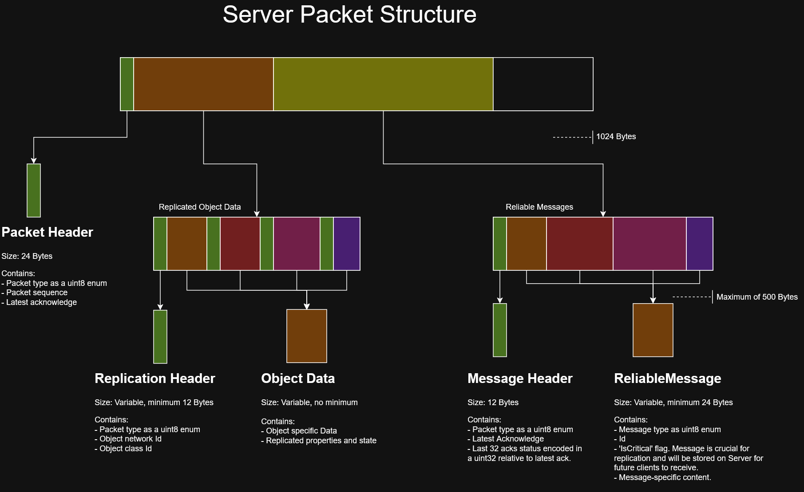
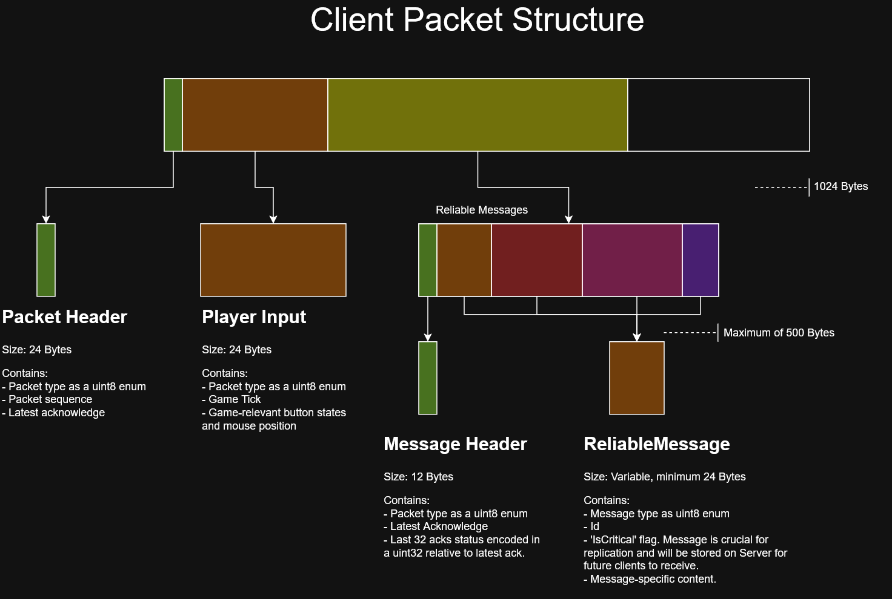
Reliable Messages
Each message is tracked, stored and resent in each packet until it is confirmed to be received by the other end. An algorithm is used to encode packet-level acknowledges into a uint32, allowing a single packet to describe the acknowledge state of 32 messages. Some messages will always need to be tracked, such as spawning of player-controlled objects so that connecting Clients can replicate them correctly.
These so called 'Critical' messages are stored and later sent for any newly connected client.
They can then be queried and removed in case the message is no longer valid, such as when a player leaves and their controlled object is removed.
Takeaways
- The project allowed me to try my hand at implementing and designing a multitude of systems that we take for granted in the game engines we use today, such as physics, object handling and management, timers and more.
- I also got to learn how networking and net code is implemented in games, the complexities and issues that come with it, and how to address them.
- I got to experience the problems with pure OOP design patterns when trying to make my own game engine and game elements. If I were to do this again, I would instead try to rely much more on ECS and composition to create game elements, instead of relying to heavily on inheritance mechanics.
Bachelors Thesis
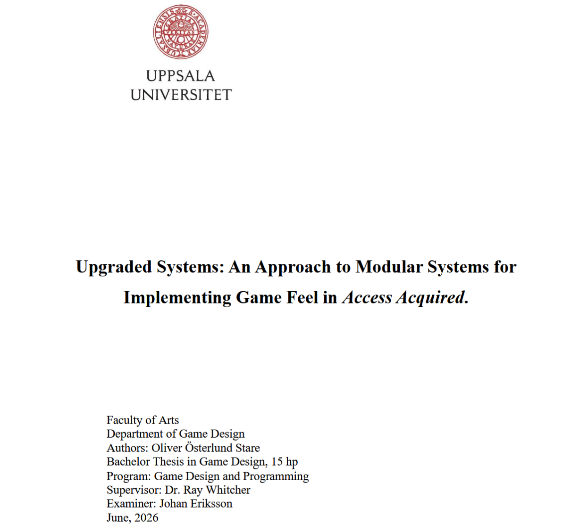
What is it?
A fully networked game, ran over the local network with my own network protocol and game engine. It handles automatic LAN discovery, connecting multiple separate clients, timeouts for unresponsive clients, disconnects and reconnects. Packets are sent from the Server 10 times per second, with Client sending input 20 times per second, but can be customised for different game types.